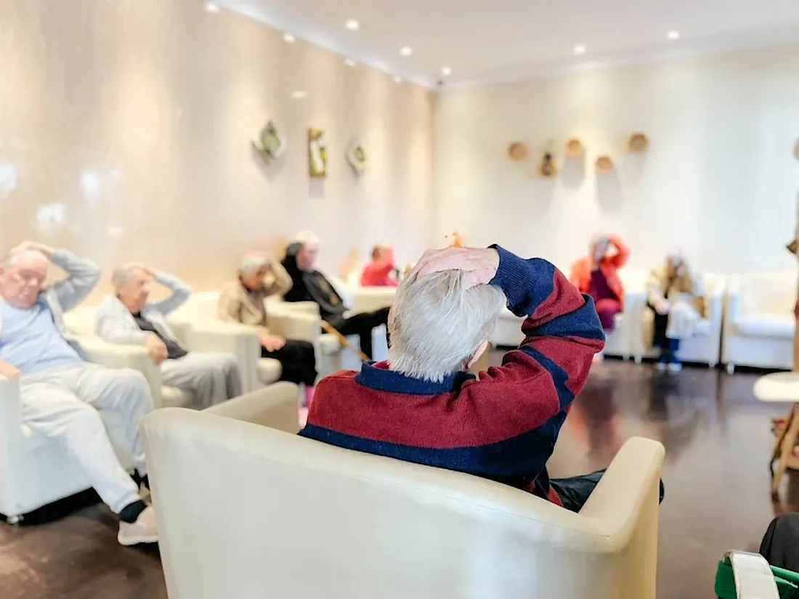

Viva La Vitta|Residencial Sênior
Cuidado diário, rotina estruturada, acompanhamento de verdade
No Viva La Vitta, cada hóspede é visto como alguém único, com personalidade, hábitos e trajetória. É isso que torna o cuidado mais humano, respeitoso e individual.

Quem cuida
Uma equipe com profissionais de várias áreas, para que nem o hóspede nem a família precisem se preocupar com nada. As técnicas são escolhidas pela experiência e também pelo carinho com que tratam cada pessoa.
A rotina da casa
Atividade física
A Rafaela, fisioterapeuta e proprietária, faz atividade física com os hóspedes pelo menos duas vezes por semana.
Atividades cognitivas
Ao longo da semana a equipe promove atividades que estimulam memória, atenção e convivência.
Seis refeições por dia
Seis momentos ao longo do dia que são também de presença e afeto, com atenção ao sabor e à saúde.
Relatórios para a família
A gerente acompanha a rotina de perto e mantém contato direto com as famílias.
Serviços à parte
Para deixar a rotina ainda mais completa, a casa oferece serviços terceirizados que podem ser pedidos pelos responsáveis e são cobrados separadamente.
Atendimento individual, além das atividades em grupo que já fazem parte da rotina.
Cuidado com a aparência sem precisar sair de casa.
Convênio com serviço de ambulância para quando for necessário.
Cuidar em casa ou no residencial?
É uma das dúvidas mais comuns das famílias. Montamos um resumo do que muda em cada caso.
| Em casa, com cuidador | No Viva La Vitta | |
|---|---|---|
| Equipe | Um ou poucos profissionais, que precisam cobrir todas as necessidades. | Técnicos de enfermagem, enfermeiro, médico, nutricionista, fisioterapeuta, cozinha e limpeza. |
| Custos | Salário do cuidador, mais luz, gás, água, alimentação e transporte. | Essas despesas básicas ficam por conta da casa. O valor total pode ficar igual ou abaixo do cuidado em casa. |
| Folgas e férias | Faltas e feriados, como as festas de fim de ano, deixam a família sem cobertura. | A escala da equipe cobre todos os dias do ano. |
| Riscos | A família assume os riscos trabalhistas da contratação. | A família não tem vínculo trabalhista com a equipe. |
Transparência e segurança
A proprietária apresenta às famílias os documentos que comprovam a regularidade do residencial. Vale perguntar por eles em qualquer visita.
Auto de Vistoria do Corpo de Bombeiros, que atesta as condições de segurança contra incêndio do imóvel.
Licença sanitária para funcionar como instituição de longa permanência para idosos.
Inscrição no Conselho Municipal do Idoso, exigida das entidades que atendem pessoas idosas.
Viva La Vitta|Residencial Sênior
Venha conhecero Viva La Vitta!
Escolher um residencial começa por uma visita. Marque um horário, conheça a equipe e veja a rotina da casa de perto.